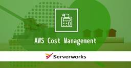
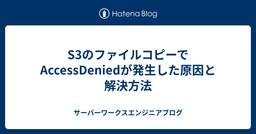
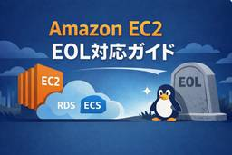
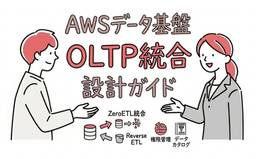
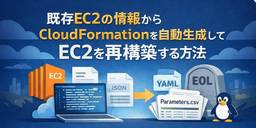
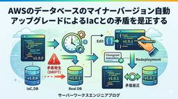
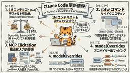

サーバーワークスエンジニアブログ
https://blog.serverworks.co.jp/
クラウド専業インテグレーター・サーバーワークスの中の人があらゆる技術についてお届けします。
フィード
EC2に「アクセスキー」は眠っていませんか？流出事案に学ぶ構成見直しリスト
サーバーワークスエンジニアブログ
はじめに こんにちは、クロスインダストリー第2本部 クラウド活用推進課の岡野です。 先日、私が担当させていただいているお客様の環境において、AWSのアクセスキーが外部へ流出するという事案が発生しました。 まず誤解のないよう冒頭に申し上げますが、本件は弊社の管理不備によるものではなく、またお客様自身も何か悪意を持って情報を漏洩させたわけではありません。しかし、どれほど注意を払っていても「事故」は起こり得るものです。 この事象がある程度収束した直後、私のX（旧Twitter）で投稿した内容がこちら。 アクセスキー、まじローテしてくださいね…！！ほんと…！— Yuhi Okano / 岡野 雄飛 (…
1日前

Google Workspace CLIとKiro CLIで週報を自動生成してみた
サーバーワークスエンジニアブログ
Google Workspace CLIとKiro CLIを組み合わせて、Googleカレンダーの予定を取得し週報を自動生成する手順を解説します。gcloud CLIのインストールからOAuth設定（Internal前提）、Kiro CLIからのgwsコマンド呼び出し、カスタムエージェントの定義まで、CLIだけで完結するワークフローをステップごとに紹介します。
1日前
Keycloakを学ぶ⑥テーマカスタマイズ編
サーバーワークスエンジニアブログ
日本語化 テーマの変更 既存テーマの切り替え オリジナルテーマの作成 新しいテーマ用ディレクトリの作成 デフォルトテーマのコピー テーマ内容の編集 まとめ こんにちは、アプリケーションサービス本部の上田です。 本日ついに！楽しみに待っていたジョジョの奇妙な冒険第7部のスティール・ボール・ランが配信開始です！！ 仕事終わったら晩酌しながら視聴します👍 さて、本題ですが今回はちょっと小ネタ的な内容で、Keycloakのテーマ変更と日本語化を行ってみます。 そもそも最初の段階でやっておけよという意見もありますが、ドキュメント参照の関係上デフォルトの英語の方がわかりやすかったりするので今までやってませ…
2日前

「とりあえずRI/SPs」はなぜ危険か？データに基づくAWSコスト最適化の「正しい順序」
サーバーワークスエンジニアブログ
はじめに こんにちは、クロスインダストリー第2本部 クラウド活用推進課の岡野です。 私は普段から既存のお客様を中心に、AWSにおけるカスタマーサクセスを叶えるべく、クラウドの利活用を推進しております。 以下のようなご相談をよくお客様からいただくことがあります。 お客様「コストの最適化って、まずは1年か3年か前払いする、RI？SP？を買えばいいんだよね？？」 岡野「いえ、実はですね……」 今日はそんなご質問に回答するべく、AWSコスト最適化の「正しい順序」について記載します。 AWSの利用料が急増した際、「まずは安くするためにReserved Instance (RI) や Savings Pl…
3日前
Amazon S3でバケット名が被らない！？新機能「Account regional namespaces」を試してみた
サーバーワークスエンジニアブログ
こんにちは！ES課の濱岡です！ 最近暖かくなりましたね！ そろそろ花見をしようかなと思う今日この頃です。 さて、今回はAmazon S3のちょっと嬉しい新機能、「Account regional namespaces」についてブログを書いてみました 今回のアップデートに関する公式のAWS News Blogは以下です aws.amazon.com S3バケット名の重複に悩まされたことはありませんか？ みなさんは、新しくプロジェクトを始めるときにS3バケットを作ろうとして、「指定したバケット名は既に存在しています」というエラーに遭遇したことはありませんか？ これまでのS3バケットは、世界中のすべ…
3日前

S3のファイルコピーでAccessDeniedが発生した原因と解決方法
サーバーワークスエンジニアブログ
S3のファイルコピーでAccessDeniedが発生した原因と解決方法 はじめに こんにちは、クロスインダストリー第1本部の竹村です。 Amazon S3で「既存のオブジェクトをコピーして別名で保存する」という、ごく一般的な処理を行っていたのですが、ある時を境にAccessDenied（アクセス拒否）が発生し、処理が失敗するようになりました。 今回はその原因と解決方法を紹介したいと思います。 前提と発生した課題 処理の前提 バケットのオブジェクトをコピーして同じバケット内にアーカイブする処理があり、アクセス元のIAMポリシーでは以下の基本的な権限を設定していました： { "Version": …
4日前

EC2 OSのEOL対応ガイド：事前準備から移行方法まで
サーバーワークスエンジニアブログ
こんにちは！イーゴリです。 EC2を運用している場合、OSのEOL（End of Life）への対応は避けて通れません。 EOL対応では単にOSを入れ替えるだけではなく、インフラ構成や運用方法の見直しが必要になることもあります。 本記事では、EC2のLinux EOL対応を行う際に検討しておきたいポイントと移行方法について紹介します。 EOL対応の事前準備 マネージドサービスへの移行検討 新しいOSで何が変わるのかを理解する IPアドレス変更の影響を確認する 既存ソフトウェアの動作確認 コスト最適化の検討 セキュリティの見直し 自動化の検討 手順の標準化 命名規則の整理 スナップショット管理 …
5日前

AWSでデータ基盤にOLTPデータベースを統合するための設計ガイド 1
1
サーバーワークスエンジニアブログ
さとうです。 最近データ基盤のOLAPとOLTPについて考えることが増えてきたので記事にしました。 趣旨はタイトル通り、「OLTPデータベースをデータ基盤に取り込むためにはどうしたらいいか？」という課題に対する設計パターンのまとめです。 OLTPとOLAPについて 概要 データ基盤にOLTPを統合したい動機 OLAPとOLTPの処理性能の比較 OLTPを統合する場合の課題 OLTPとOLAPの同期 データカタログの統合管理 設計原則 データベースの分離 SSOT（信頼できる唯一の情報源）を決める ETLジョブはリトライ可能な疎結合構成にする 設計パターン 前提 OLTPを正としてOLAPを拡張…
5日前

既存EC2の情報からCloudFormationを自動生成してEC2を再構築する方法
サーバーワークスエンジニアブログ
こんにちは！イーゴリです。 以前、以下の記事で既存EC2のENIを置き換えるためのCloudFormationテンプレート生成ツールを紹介しました。 この方法では、既存のENIをそのまま利用します。 ただし、AWSの仕様上、既存のENIを持つEC2を削除してから、新しいEC2にENIをアタッチするという手順になります。 blog.serverworks.co.jp 今回はそれとは少し異なり、既存EC2の情報をもとに「新しいEC2インスタンス」をCloudFormationで作成するためのテンプレートを自動生成するツールを紹介します。 この方法では新しいENIが作成されるため、新しいIPを使用す…
5日前

AWSのデータベースのマイナーバージョン自動アップグレードによるIaCとの矛盾を是正する
サーバーワークスエンジニアブログ
こんにちは。 アプリケーションサービス部、DevOps担当の兼安です。 マイナーバージョン自動アップグレードとIaCのお話しです。 はじめに 本記事のターゲット マイナーバージョン自動アップグレードにより発生するドリフト データベースとIaCのドリフトの確認 AWS CDKを修正・再デプロイをしてドリフトを解消する CloudFormationテンプレートを修正してから、変更セットを作成してドリフトを解消する ドリフトの解消に伴うスタック更新に要する時間 はじめに IaCでデータベースリソースをデプロイした後、マイナーバージョン自動アップグレードによりバージョンが変更された場合、IaC側との矛…
5日前
ローカルLLMを触ってみる
サーバーワークスエンジニアブログ
はじめに ローカルLLMとは 今回の構成 LM Studioのセットアップ LM Studioとは モデルのインストールと動作確認 MCPの設定 Open WebUIでナレッジベース（RAG）を構築 Open WebUIとは Dockerでの起動 LM Studioとの接続 1. LM Studio側でAPIサーバーを起動 2. Open WebUIの管理画面で設定 ナレッジベースの作成 使ってみた所感 メリット デメリット ユースケースの考察 まとめ はじめに こんにちは、アプリケーションサービス本部ディベロップメントサービス3課の北出です。 新しくMacBook Proを購入したのをきっか…
6日前
Amazon Bedrockを使ったクイズアプリで生成処理のボトルネックを特定し、応答速度を改善してみました
サーバーワークスエンジニアブログ
映画「プロジェクト・ヘイル・メアリー」の公開が待ち遠しい畑野です。 先日、記述式AWSクイズアプリの記事を公開したところ、少し反響をいただいたので、以前から改善ポイントとして考えていた「クイズ生成速度の改善」にチャレンジしてみました。 Amazon Bedrock（以降、Bedrock）に渡すプロンプト処理などに改善の余地があったため、どのように原因を切り分けて改善したか、そのプロセスをまとめてみました。 本記事をご覧になる前にこちらの記事をご覧いただくと、経緯が分かりやすくなります。 blog.serverworks.co.jp
6日前

Claude Code更新 1Mコンテキスト対応・btwコマンド・MCP Elicitation【2026/3/8〜14】 2
サーバーワークスエンジニアブログ
Claude Code更新 1Mコンテキスト対応・btwコマンド・MCP Elicitation【2026/3/8〜14】 はじめに サーバーワークスの池田です。 今週（3/8〜3/14）の Claude Code は v2.1.72 から v2.1.76 までリリースされました。1M コンテキストの標準化、コマンド周りの強化、MCP Elicitation 対応、Enterprise 向け設定の拡充など、幅広いアップデートがありました。 この記事で分かること Opus 4.6 の 1M コンテキストが Max / Team / Enterprise でデフォルト有効化されたこと。標準料金で追…
6日前
【Lambda不要】EventBridge + SNSでメール件名と本文を自由にカスタマイズする方法（Step Functions活用）
サーバーワークスエンジニアブログ
はじめに こんにちは！アプリケーションサービス部エデュケーショナルサービス課（以下ES課）の 三角(みすみ)です。 AWS運用において、リソースの状態変化やセキュリティアラートをEventBridgeで検知し、Amazon SNS経由でメール通知する構成は定番です。 しかし、そのままEventBridgeからSNSへデータを渡すと、メールの件名が一律で 「AWS Notification Message」 という味気ないものになり、本文も読みづらいJSONの羅列になってしまいます。 これを解決するために間にAWS Lambdaを挟むのが一般的ですが、「通知のルーティングのためだけにLambda…
6日前
送信元 IPでAWSアクセスを制限する際のIAMポリシーの注意点
サーバーワークスエンジニアブログ
はじめに こんにちは！アプリケーションサービス部エデュケーショナルサービス課（以下ES課）の 三角(みすみ)です。 今回は送信元 IPでAWSアクセスを制限する際のIAMポリシーの注意点を実例を交えて紹介します！ 送信元 IPでAWSアクセスを制限する際のIAMポリシーを作成する 「AWS IP制限 IAM」のような検索ワードでトップに出てくる下記の記事を元にIAMポリシーを作成します。 docs.aws.amazon.com IAMポリシーの例 { "Version":"2012-10-17", "Statement": { "Effect": "Deny", "Action": "*", …
6日前

【30分AWSハンズオン(8)】DevOps Agentを使ってみよう
サーバーワークスエンジニアブログ
こんにちは、エデュケーショナルサービス課の小倉です。 久しぶりの30分AWSハンズオンシリーズです。 サーバーワークスでは、自由に勉強会を開催してスキルアップをしています。その中で私は毎週火曜日の朝、「30分AWSハンズオン」という30分でできるAWSハンズオンを2021年9月から継続して開催しています。その内容をブログで定期的に紹介していきます。AWSをご利用のみなさまのスキルアップにお役立ていただければと考えています。 8回目は、「DevOps Agentを使ってみよう」をやります。一点注意としては、DevOps Agentは2026/3/13現在、パブリックプレビューとなっており、まだ正…
8日前
Keycloakを学ぶ⑤外部DB接続編
サーバーワークスエンジニアブログ
AWS上でデータベース (RDS) を作成 DB用のセキュリティグループを設定 Keycloak側の設定 （オプション）過去データの流し込み 内部DBからのエクスポート 外部DBへのインポート まとめ こんにちは、アプリケーションサービス本部の上田です。 以前某ソウルシリーズをまとめて購入し進めている話をしたのですが2の方をぼちぼちプレイしています。 シリーズとしては賛否両論あるようですが個人的にはゲームもプレイしやすくなっていて悪くないと思っています。道中に比べてボスが割かし簡単なのだけちょっと物足りなさがあるかなと感じるくらいですね。 さて、本題ですが今回はKeycloakと外部DBの接続…
9日前
WorkSpaces Pools で「プロキシ強制転送」を設定する際の注意点
サーバーワークスエンジニアブログ
はじめに こんにちは。 WorkSpaces Pools を利用した環境構築において、SASE（Secure Access Service Edge）や SSE の導入によりセキュリティを強化するケースがございます。 たとえば Netskope などの製品を導入し、「すべての通信をクラウド上のプロキシ（ゲートウェイ）へ引き込んで検査する」といった構成をとる場合、WorkSpaces Pools 特有の仕様による「ハマりどころ」が存在します。 この設定をそのまま適用すると、「WorkSpaces に接続できない」「セッションが頻繁に切れる」といったストリーミングのトラブルが発生する可能性があるた…
9日前
Excel方眼紙をKiroに読ませてAmazon Redshiftの仕様駆動開発を成立させるためにやったこと
サーバーワークスエンジニアブログ
さとうです。 以前、下記で社内勉強会の資料を公開しました。 社内で「低級言語が高級言語に置き換わったのと同じように自然言語が開発言語になる時代になった」など大局的な視点で時流を感じさせる議論の種になったり、あまり面識のなかった人がこの資料の感想を話してくれるなど色々な意味で反響のあった資料でした。 blog.serverworks.co.jp 仕様駆動開発のアプローチで巨大なPL/pgSQLを開発したという話なのですが、わかりやすさ重視で詳細は割愛しています。 実際にやっていた内容はExcelの仕様書をKiroのSpecに落とし込んで仕様駆動開発をするというものでした。 様々な事情がありExc…
10日前
Kiro から AgentCore Gateway 経由で S3 Vectors を操作してみた — MCP × Lambda × IAM 認証
サーバーワークスエンジニアブログ
Kiro から AgentCore Gateway 経由で S3 Vectors を操作してみた — MCP × Lambda × IAM 認証 はじめに まず完成形をお見せします。Kiro のチャットで「修学旅行で東京を巡る青春映画」と聞くと、裏側で S3 Vectors にベクトル検索をかけて、こんな結果が返ってきます。 { "query": "修学旅行で東京を巡る青春映画", "results": [ { "key": "jp5", "distance": 0.4935, "metadata": { "year": 2024, "genre": "youth", "director": …
10日前
AgentCore Gateway + Policy の料金を整理する — 課金対象の見分け方からCloudWatch メトリクスまで
サーバーワークスエンジニアブログ
AgentCore Gateway + Policy の料金体系を整理する — Cost Explorer・CloudWatch メトリクス・CloudTrail によるコスト監視 はじめに Gateway の料金体系 Gateway 本体 Policy Engine 課金対象になる操作・ならない操作 Gateway API Invocations の対象 Policy Authorization Request の対象 Input Tokens Processed の対象 Search API について Cost Explorer で課金内訳を確認する CLI での確認方法 USAGE_TY…
10日前
AWS Systems Manager Patch Manager「非準拠」を通知してみた（シンプルな通知編）
サーバーワークスエンジニアブログ
はじめに こんにちは、サメ映画をこよなく愛する梅木です。最近のお気に入りは複数頭のサメが一気に押し寄せるタイプのサメ映画です。 前回のブログでは、AWS Systems Manager Patch Manager を利用したパッチスキャンの自動化と、コンプライアンスレポートでの「準拠・非準拠」の確認方法をご紹介しました。 パッチスキャンを自動化できたのは良いのですが、 「パッチスキャンの都度AWSマネジメントコンソールに見に行くのは面倒…適用されていないパッチが検出された時だけ教えてほしい！」 といった、通知機能が欲しくなります。 そこで今回は、前回の設定の続きとして、Patch Manage…
11日前
Amazon QuickSightをゼロから触ってみた〜CSVアップロードでダッシュボードを作るまで〜
サーバーワークスエンジニアブログ
Amazon Quick Sight とは 今回の構成 サンプルデータを用意する データセットを作成する SPICE へのインポートについて 分析を作成する 月別売上推移（折れ線グラフ） 地域別売上（棒グラフ） 商品カテゴリ別売上割合（円グラフ） 分析とダッシュボードの違い ダッシュボードを公開する 公開時に選べるオプション 完成したダッシュボード エグゼクティブサマリーを使ってみた まとめ こんにちは。IX2部の山科です。 Amazon QuickSight を触る機会があり、「S3 や Athena を使わなくても、CSV を直接アップロードするだけで可視化できる」ということを知り、思った…
11日前
スクラムガイドの読書会を開催してみた
サーバーワークスエンジニアブログ
はじめに スクラムガイドとは 開催の背景 開催形式 参加者の感想 平松 森山 香取 折戸 遠藤 宮本 理解度クイズの結果 まとめ はじめに サーバーワークスの宮本です。本記事では弊社内の有志で開催したスクラムガイドの読書会について紹介します。 スクラムガイドとは スクラムガイドは、Jeff Sutherland 氏と Ken Schwaber 氏が 30 年以上かけて開発・進化・保守しているスクラムを⽂書化したものです。原著は英語ですが、様々な言語に翻訳されており、日本語版もあります。初版は 2010 年に公開されましたが、その後改訂を重ね、最新版は 2020 年となっています。 https:…
11日前
AWS Glue Spark ジョブの並列処理数を検証して理解してみた
サーバーワークスエンジニアブログ
はじめに この記事で学べること 前提知識・条件 AWS Glue のワーカーとは Driver Executor 並列処理の仕組み ワーカータイプ別スペック（今回の検証で使用するもの） やってみた 検証用スクリプト 環境構築 NumberOfWorkers=2、G.1X の場合 NumberOfWorkers=3、G.1X の場合 NumberOfWorkers=2、G.2X の場合 検証結果のまとめ まとめ はじめに こんにちは！アプリケーションサービス本部ディベロップメントサービス１課の森山です。 私事ですが、先日 Serverless 部門でAWS Community Builders …
11日前
Claude Code v2.1.72 briefモード・plan引数・ExitWorktree追加
サーバーワークスエンジニアブログ
はじめに サーバーワークスの池田です。 2026年3月10日に Claude Code v2.1.72 がリリースされました。50項目以上の変更を含む大型アップデートです。新たに追加された brief モード、/plan の引数サポート、effort UI の刷新、CLAUDE.local.md の廃止が注目ポイントです。本記事では実務に影響の大きい変更点を中心に解説します。 この記事で分かること v2.1.72 で追加された --brief フラグと /brief コマンドの概要。SendUserMessage ツールによるエージェント・ユーザー間通信の仕組み。 /plan コマンドに引数サ…
11日前
【Cloud Automator】AIがジョブワークフロー作成をサポート！複雑な運用自動化が「質問に答えるだけ」で完成
サーバーワークスエンジニアブログ
Cloud Automator に新しく「AIジョブワークフロー作成支援機能」を追加しました。 先日リリースした「AIジョブ作成支援機能」に続く、AIを活用した運用自動化支援機能の第二弾です。 blog.serverworks.co.jp この機能を使えば、Cloud Automatorからの質問に答えるだけで、複数ジョブを組み合わせた複雑なジョブワークフローを簡単に作成できるようになります。 ジョブワークフロー活用における課題 Cloud Automator のジョブワークフロー機能は、複数のジョブを連携させて運用自動化を行う機能です。たとえば「夜間にEC2を止めてから、RDSを停止する」と…
11日前
【プレビュー】AWS DevOps Agentのハンズオンをやってみた【6 人目】
サーバーワークスエンジニアブログ
セットアップ手順からエラー発生まで解説。AWS DevOps Agentの機能を使いこなしてインシデント対応を自動化。
12日前
Database Savings Plans の対象に OpenSearch Service と Neptune Analytics が追加されました
サーバーワークスエンジニアブログ
セキュリティサービス部 佐竹です。Database Savings Plans に「対象サービス拡張」のアップデートがあり、OpenSearch Service と Neptune Analytics がコスト最適化の対象サービスとして追加されました。
12日前
GitHub ActionsでIAM Policy Autopilotを動かし、推奨ポリシーをコメントに投稿してみる
サーバーワークスエンジニアブログ
こんにちは。 アプリケーションサービス部、DevOps担当の兼安です。 今回は2025年末に発表されたIAM Policy Autopilotの活用方法を考えてみました。 GitHub ActionsでIAM Policy Autopilotを動かし、推奨ポリシーをコメントに投稿させてみようと思います。 IAM Policy Autopilotとは IAM Policy Autopilotの活用方法 GitHub ActionsのワークフローでIAM Policy Autopilotを動かすコード GitHub Actionsのワークフローの起動条件 IAM Policy Autopilotは…
12日前